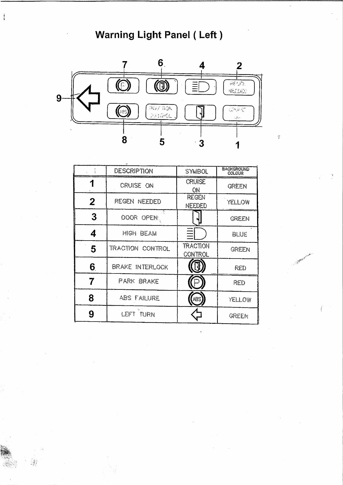
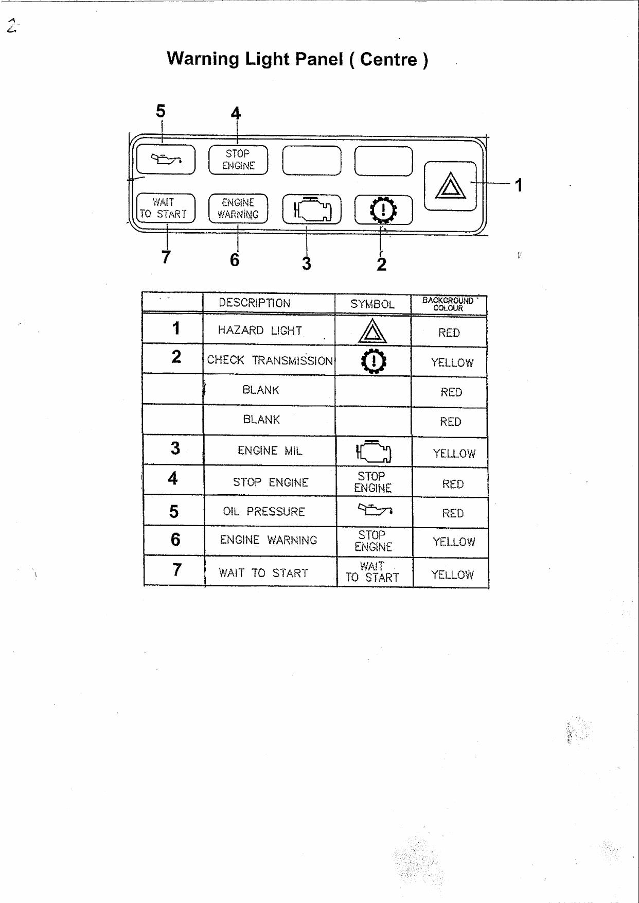
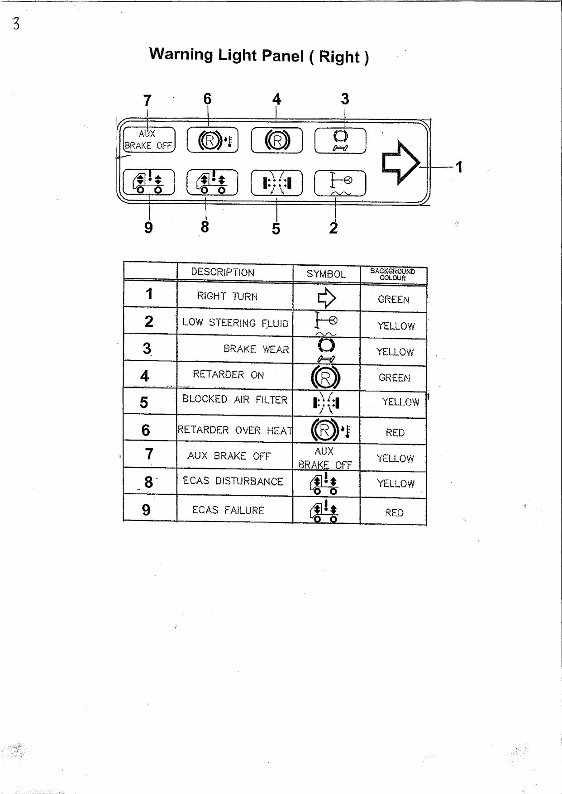
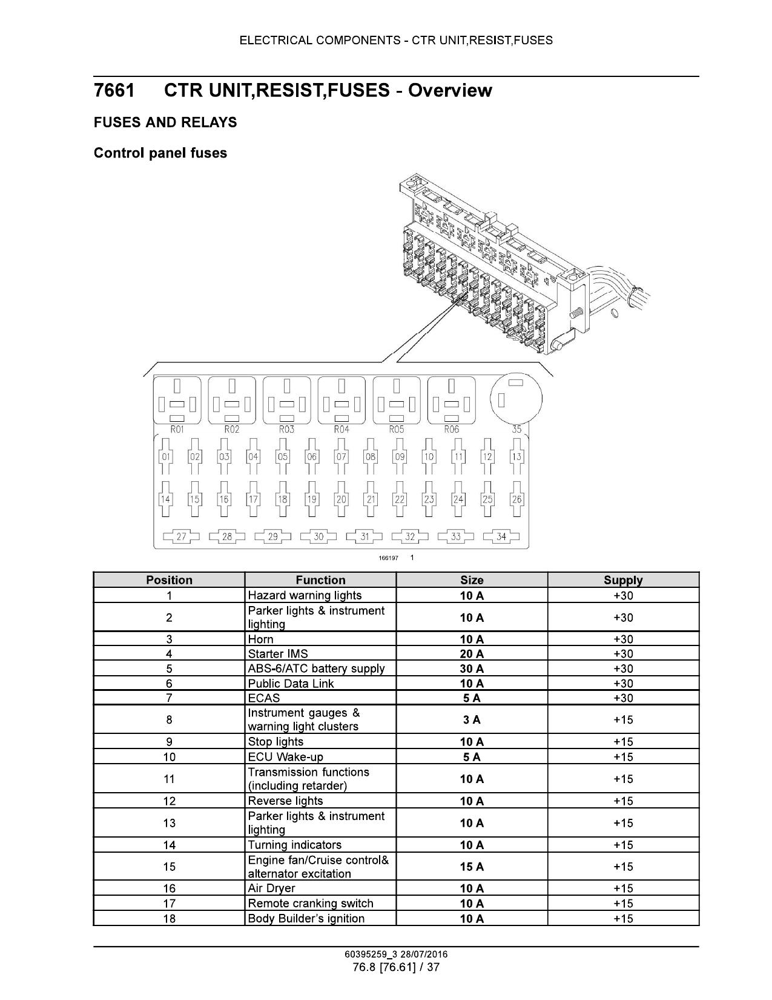
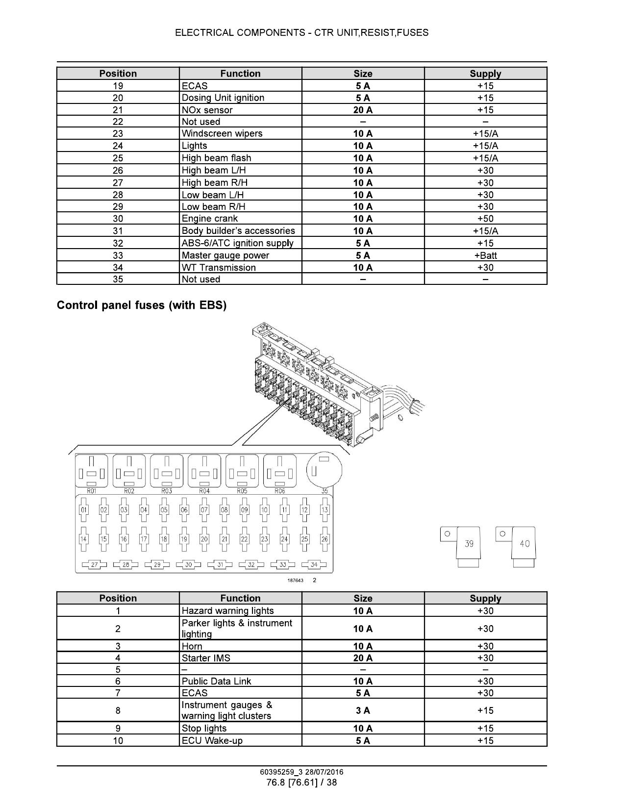
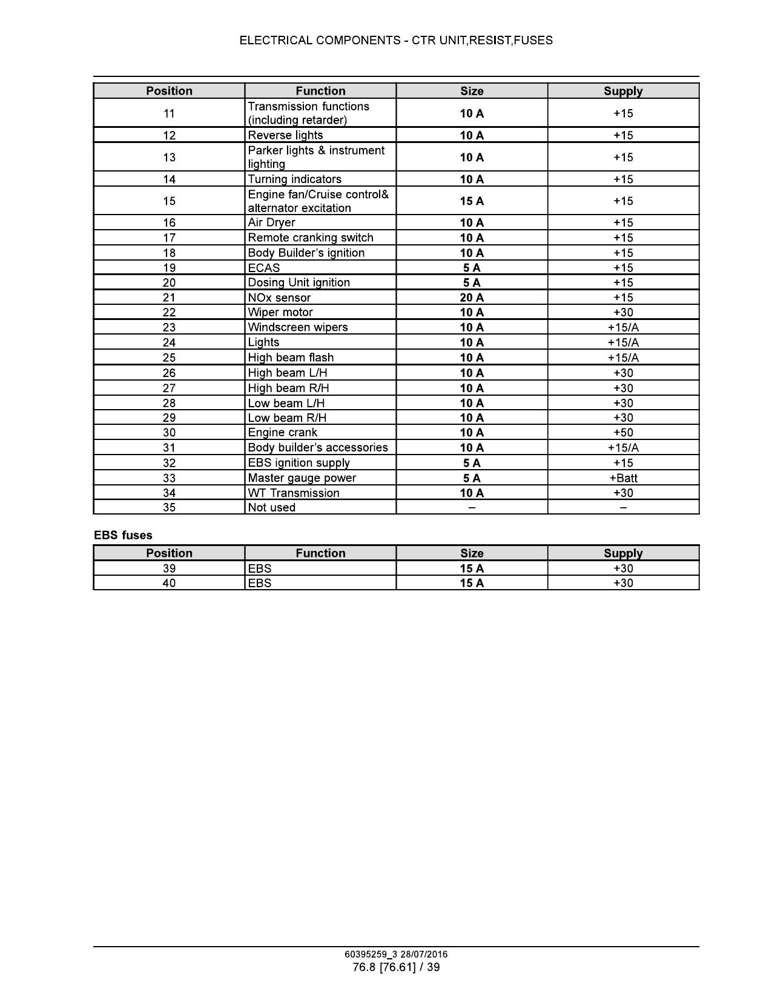
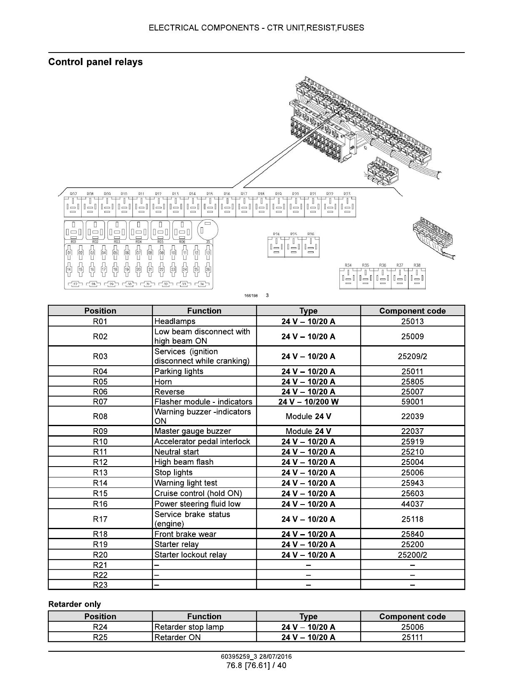
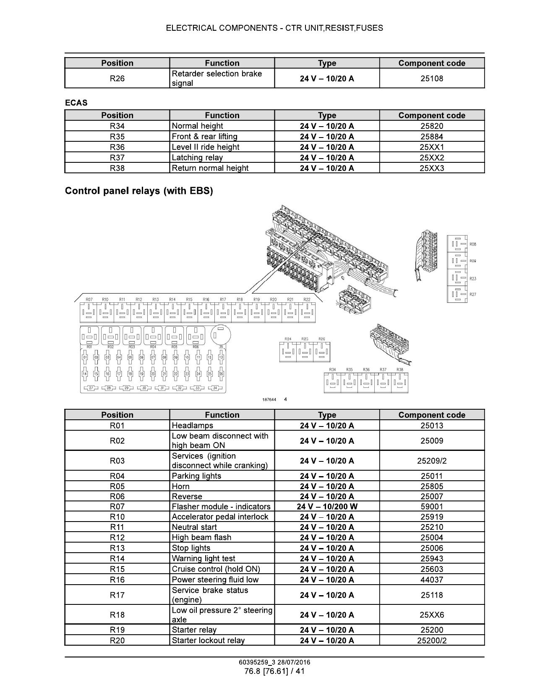
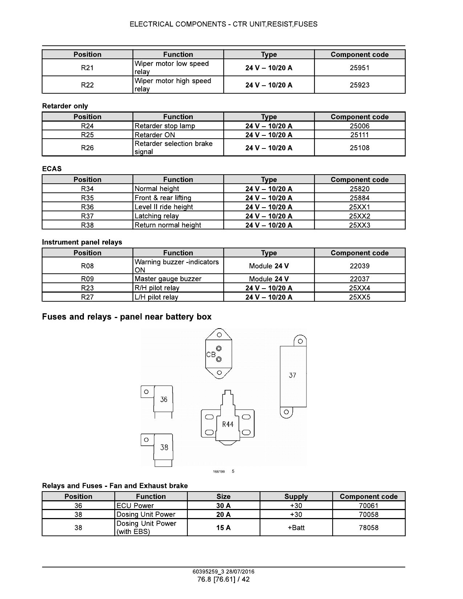

Cummins Tier 4 Fault Codes
761 codes — QSB 6.7 | QSL 9 | QSX 15 | QSB 4.5 | QSF 3.8 | QSG 12 | Rev: 11/10/2020
| Code ↕ | SPN ↕ | FMI ↕ | Lamp ↕ | J1939 SPN Description | Cummins Description | QSB 6.7 | QSL 9 | QSX 15 | QSB 4.5 | QSF 3.8 | QSG 12 |
|---|
OBD Fault Codes
148 Cummins fault codes with OBD type and derate classification — fault codes 1695 and 3147 filled from Cummins Tier 4 reference
| SPN ↕ | FMI ↕ | Lamp ↕ | J1939 SPN Description | Fault Code ↕ | Cummins Description | OBD Type ↕ | OBD Derate ↕ |
|---|
DM1 & KWP Failure Codes
248 EBS/ABS brake system codes — J1939 DM1 cross-referenced with KWP descriptions
| SPN ↕ | FMI ↕ | DM1 Description | KWP 1 ↕ | KWP 2 ↕ | KWP Description |
|---|
Dashboard Warning Light Panels
Left, Centre and Right warning light panels — diagram and reference table
Left Panel

Centre Panel

Right Panel

Euro 5 Fuse & Relay Layout
Control panel fuses and relays — standard and EBS configurations | Ref: 60395259_3 28/07/2016
Standard Fuse Panel — Positions 1–35

Standard + EBS Fuse Panel

Fuse Panel Detail (Page 3)

Control Panel Relays (Standard)

Control Panel Relays (EBS) + ECAS

Battery Box Fuses & Fan/Exhaust Relay

| Position ↕ | Function | Size / Type ↕ | Supply ↕ | Category ↕ |
|---|